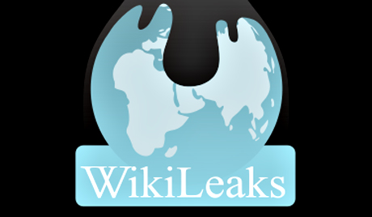

¿Que es Wikileaks?

Es una organicacion sin fines de lucro, que atravez de su pagina de internet, publica informes y documentos filtrados con contenido sensible de interes publico.
El inicio del sitio empieza en Diciembre del 2006, pero su actividad comenzo en julio de 2007-2008, desde esa fecha la base de datos de la pagina ha crecido constantemente llegando a acumular mas de 1.2 millones de documentos. Su creador se llama Julian Assange.
La organización se ofrece a recibir filtraciones que develen comportamientos no éticos ni ortodoxos por parte de los gobiernos, con énfasis especial en los países que considera tienen regímenes totalitarios, WikiLeaks se han centrado en la actividad exterior de los Estados Unidos,5 especialmente en relación con las guerras de Irak y de Afganistán